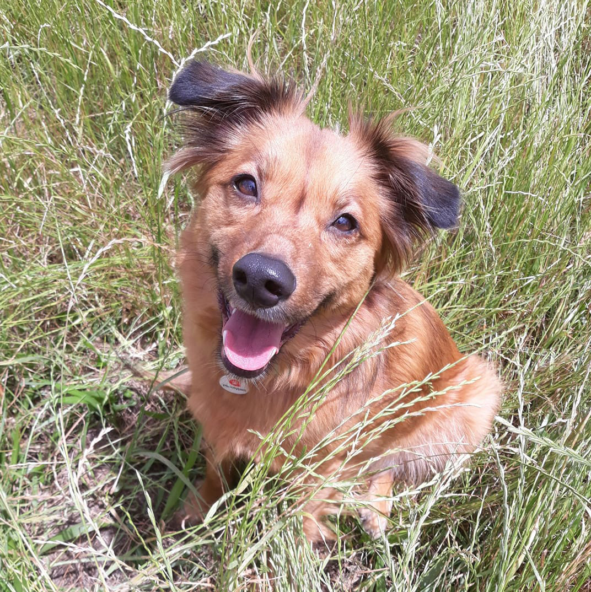
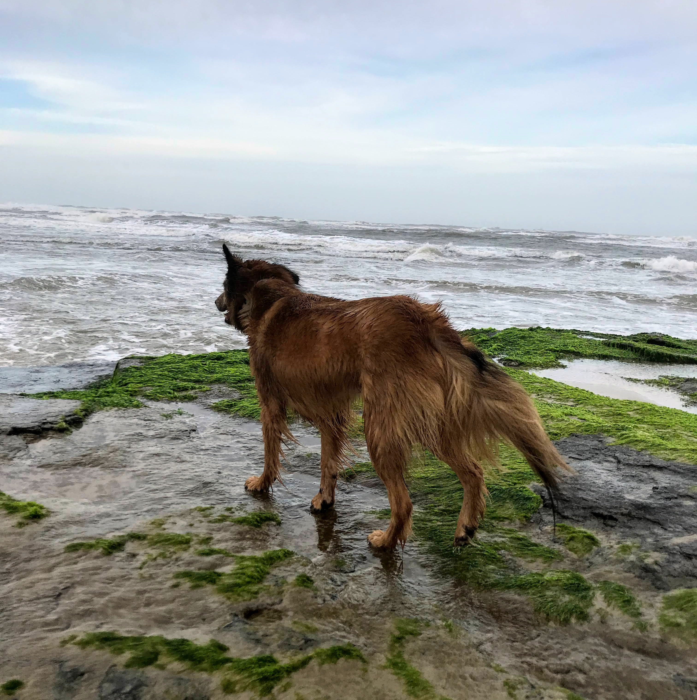
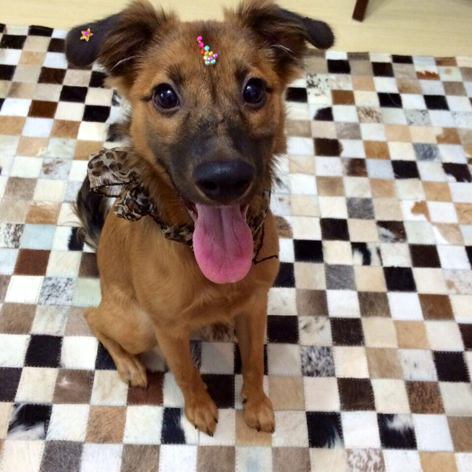
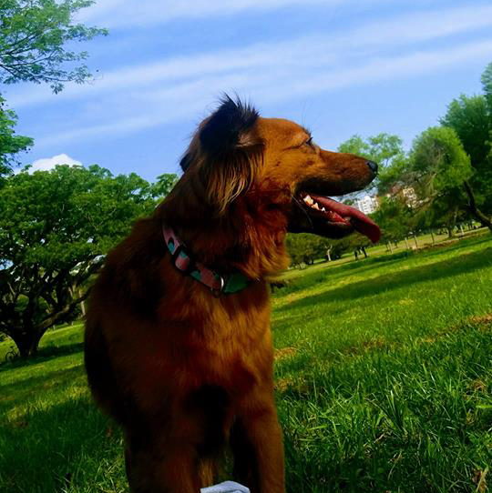
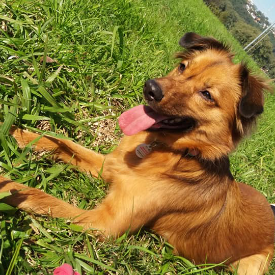

My Story
Dora was adopted in 2014, just a few days old — too young to even open her eyes. She came into our lives as a tiny caramel bundle, and from that very first moment, she owned every corner of our hearts. Born on July 15th, she's a true summer girl with a warm spirit to match.
With no defined breed — what Brazilians lovingly call a vira-lata — Dora carries the colors of Brazil in her coat: a rich, golden caramel that glows in the sun. Her pointed ears and sharp amber eyes give her an unmistakable fox-like look that turns heads on every walk. She is, without question, one of a kind.
Her absolute favourite thing in the world? A tennis ball. Throw it once and she'll bring it back every single time, without fail — she could play fetch for hours. She also demands belly rubs on her own terms and somehow always knows exactly when you need her most. Dora is proof that the best dogs don't come with a pedigree — they come with a story.
Gallery
These are my most beautiful selfies.




Get in Touch
This page was created to share our beloved Dora with the world, and to provide contact information in case she is ever lost. There is a QR code on her collar linking here.